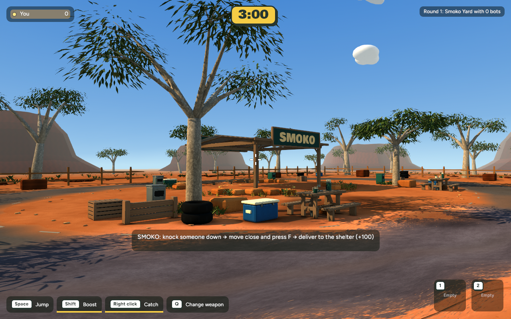
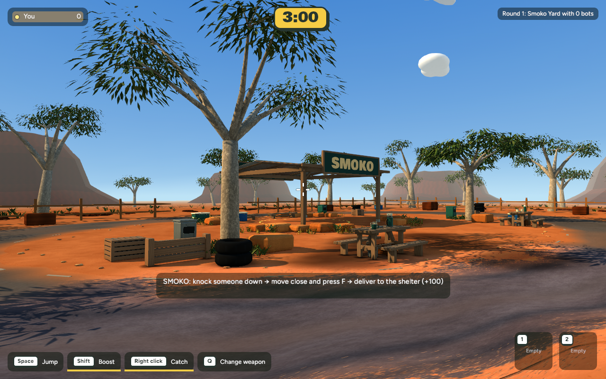
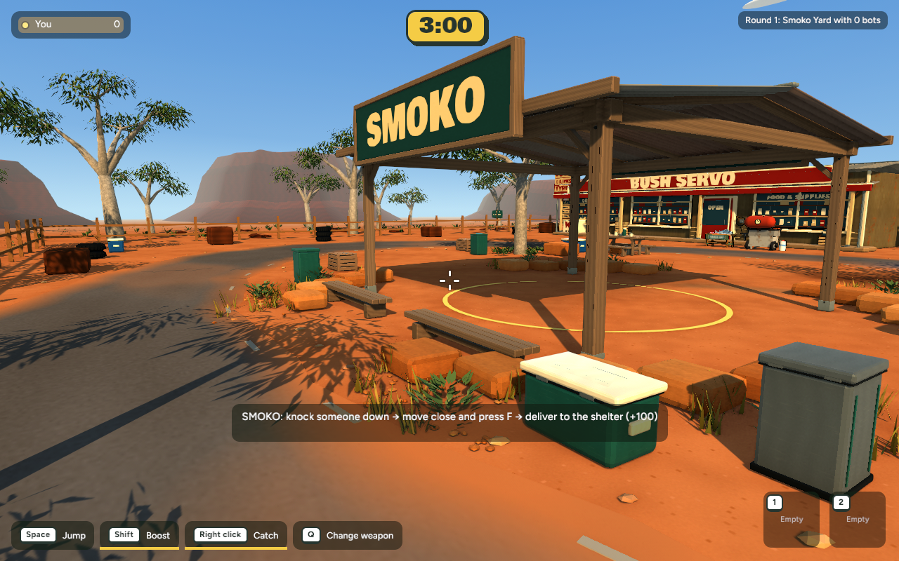
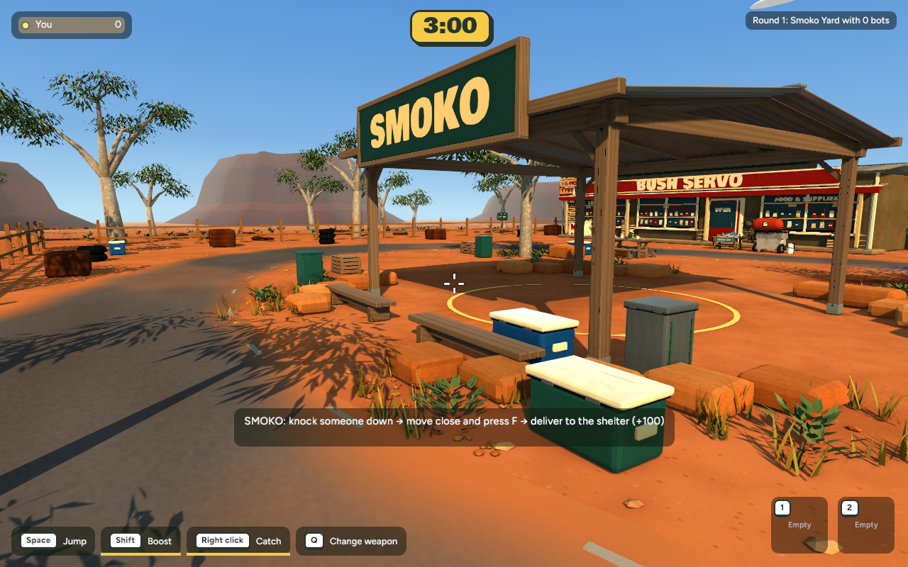
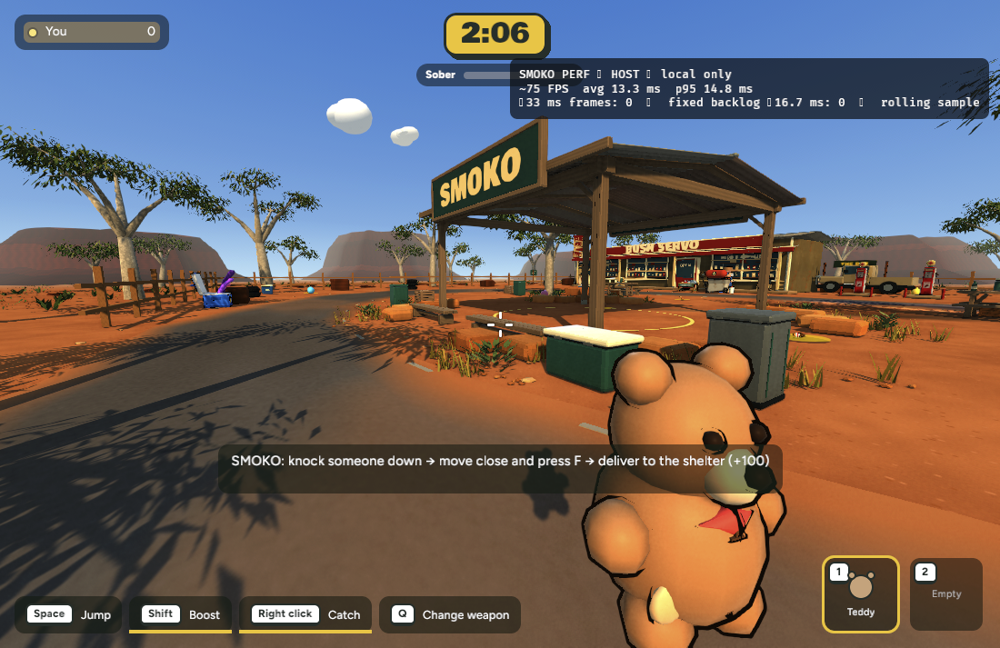
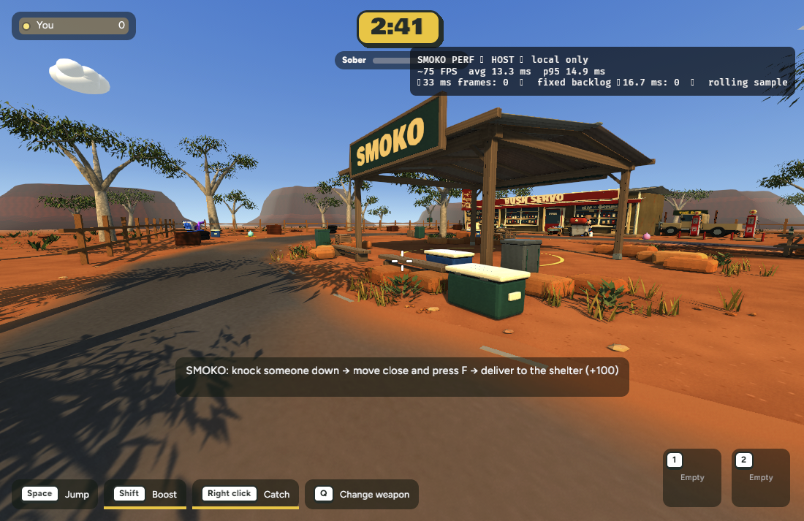

Actual game captures · 11 November 2026 · Approved for commit and browser publication on 12 November. The pass moves the esky and bin into the shelter-side picnic group, varies the front rock bank, and aligns collision and ground details with the new layout.
Same native camera and 1280 × 800 capture setup. The foreground esky and bin move back toward the shelter-side picnic area.


Same native camera and capture setup. The stones have more varied shapes, and the route beside the table is clearer.


These are solo gameplay captures from different runs. Player and item positions differ, so use them as a scene-scale check rather than a matched A/B pair.


| View | Mean before → after | p95 before → after |
|---|---|---|
| Native entrance | 18.687 → 9.639 ms | 33.650 → 15.484 ms |
| Native bench | 8.169 → 9.858 ms | 10.054 → 14.417 ms |
| Browser sample | 13.330 → 13.329 ms | 14.8 → 14.9 ms |
Native runs are single 600-sample captures and vary substantially; they do not show a reliable trend. Scene counts are unchanged: 2,632 meshes, 862 materials and 5,798 mesh entities. Browser frame time is effectively unchanged.